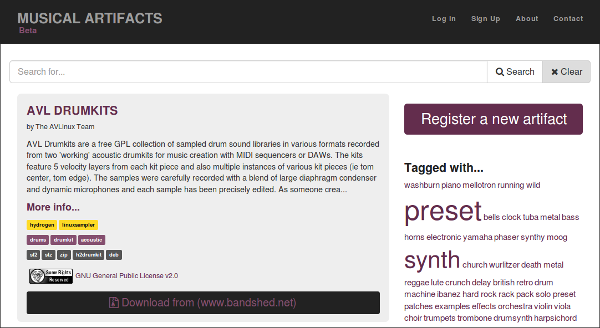
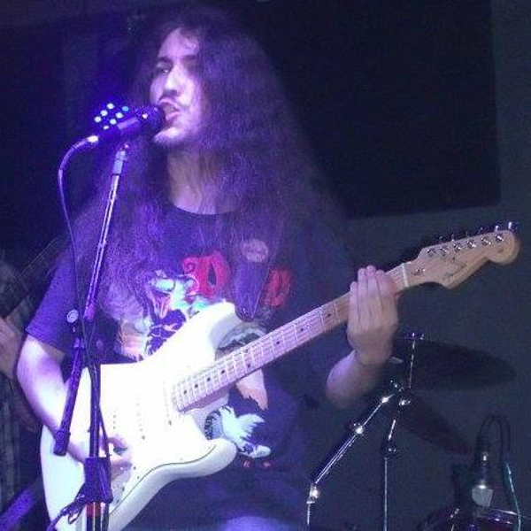
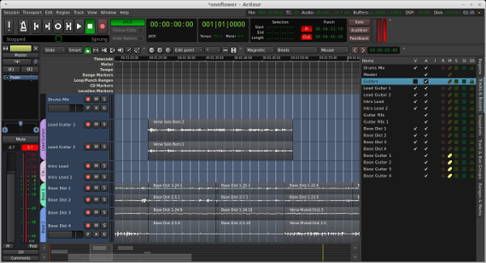
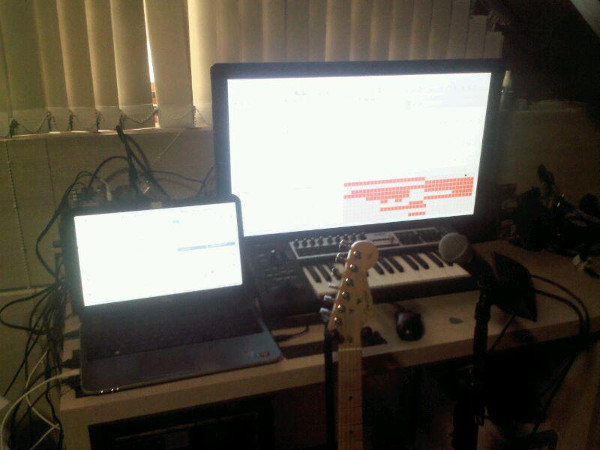
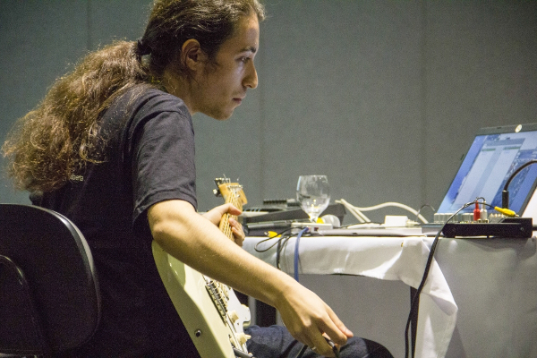

LMP Asks #13: An interview with Lucas Zawacki
This month LMP talked to Lucas Zawacki, guitarist, FLOSS enthusiast and founder of musical-artifacts.com, an online resource that brings together presets, synth patches, sample libraries, and more, all in one place for users to browse, download and/or contribute their own.
Hi Lucas and thank for you for taking the time to do the interview. Where do you live, and what do you do for a living?
I live in Porto Alegre, a city in the south of Brazil. I have a degree in Computer Science and currently work as a software developer with MconfTec , a company based around the Mconf project, an open source platform for web conferencing.
You are the founder of musical-artifacts.com. Can you tell us a bit about the history behind the project?
I had the idea for creating this application early 2015 when I was recording some tracks in Ardour and decided to search for some drum and bass samples. I found myself struggling to find the samples I wanted online and at the same time realized that some free music libraries that I had in my hard drive were now almost impossible to find anywhere. It was a weird situation: on the one hand there were a lot of free and high quality resources available, on the other some of them were now 404 or really hard to find.

So I started sketching ideas for a website where I could not only document these 'artifacts' but preserve them, include mirrors, metadata and credit the authors. Open licensing and distribution was also a big concern exactly because it helps preserve these files and makes them useful to a bigger number of people. Also I should say freesound.org and archive.org are big influences.
Can you tell us a bit about any other projects you are involved in?
I'm really interested in free software, music, videogames and all the intersections between these areas. Some of the projects I'm heavily involved with are Matehackers (a hackerspace in the city of Porto Alegre), Música Livre (a community for Brazilian musicians using free software/hardware) and my musical projects.
What is your musical background?
I started learning acoustic guitar when I was 14 (I'm 24 now) and this coincided with me starting to listen to hard rock / heavy metal artists. During high school I sang and played a little guitar here and there in several bands with my friends. I also started composing my own songs using Guitar Pro 4, started messing around with MIDI and studied music by analysing tabs and MIDI renditions of videogame soundtracks. Yes, I have no formal musical training whatsoever.
After I started using Linux I quickly learned about all the music production software and decided to take the plunge and try to record some of my material. Right now I sing and play guitar in a Heavy Metal band called Mortticia and have a solo project called Ownlife, which is an 'everything goes', 'prog-rock' sound. I hope to record demos for both bands using free-libre software.

Most of my music goes to my SoundCloud page (Here's a link to many recording samples totally done in Linux).
My band's music, Mortticia, can be found here.
For the Ownlife project, I've started a small blog to share samples and report on the recording work.
Finally, I've been giving some talks about music production with Linux, helping people and trying to unite Brazilian musicians using free hardware/software with the Música Livre project.
What is your typical workflow when making music?
I tend to compose a lot of small fragments of songs so I always have a smart phone recorder app or Audacity on my laptop ready to document them. When I start to flesh out ideas more I use Tuxguitar to write them down and I take notes for how I want to record each part.
When things start coming together I use Ardour to set up tracks for each instrument and start tracking guitars with Guitarix. I use Guitarix as an insert in Ardour to record the instruments clean and tweak the sound processing later. Right now I'm using Hydrogen for writing drum parts and use a keyboard and sequencing software to write MIDI parts for other instruments which are played with plugins like ZynAddSubFx, LinuxSampler and others.

You use a few different programs together, do you use session management?
At first I struggled a bit to orchestrate many Hydrogen, Guitarix and Linuxsampler instances without session management and I even wrote a MIDI controlled python script which loaded my 'session' for each project. Recently I've been trying to avoid this mess and moving everything to Ardour tracks as plugins, so I don't use any session management ... just my hacky scripts and not for too long.
Tell us a bit about your hardware set up
Currently I use a Behringer UCA 202 and a Behringer Xenyx 502 Mixer to connect my guitar (a Fender Strat with humless pickups) and some microphones for digital recording on my computer. I also have a Snowball Blue USB microphone which is very practical for recording voice and acoustic guitar.

My computer is a laptop with an i7 4500U processor and 8gb memory and I'm running Linux Mint Mate with the KXStudio repositories.
This set up is good enough for mixing and producing music 'inside the box' but noise is a big challenge when recording guitars and voice.
What is your history with Linux?
I changed to Linux and started using FLOSS software in the first year of my undergraduate degree in Computer Science and, as is very common, I was a Windows user before. I was introduced to Linux and FLOSS in general in a conference called FISL (the “International Free Software Forum”) and got Live CD's for Ubuntu and Suse. It took about 2 years until I could ditch Windows and change primarily to Linux.
I work mostly with web development now so I use Linux everyday. I've worked with C/C++ programming in the past, have contributed to the Wine project in 2011/2012 and I've also poked and tweaked almost every part of the Ubuntu userspace so I'd describe myself as a pretty advanced Linux user.
Why do you feel open source is important, and what for you is the most important aspect of Linux audio?
I'm familiar with open source for a long time so I could say a lot about it's importance: it's good for community building, it fosters project diversity and it makes quality software accessible to people with lower income.
Here in South America this last point, the Free (as in beer) is really important. Musicians/Producers are used to pirating all kinds of software and don't really think about it, but most know that the situation is far from ideal. I've recently learned of a publicly-owned multimedia studio based around Linux in Niterói, Rio de Janeiro. The money they saved on software licenses they could invest in hardware and equipment, and it's already been used to produce community radio shows, songs and videoclips.
This access to technology coupled with the open source sense of community is a real boost to those creative people that aren't willing or can't invest too much money in expensive, proprietary software.
What do you feel is currently lacking in Linux audio?
Everytime I talk about Linux audio I repeat this: Linux has excellent software for audio production, sometimes rivalling proprietary alternatives ... but it takes some time before you're up and running and you've got everything figured out. Making this initial period easier on newer users, who sometimes are musicians first and Linux users second is still a big concern in my mind.
I'm optimistic thought, thanks to projects like KXStudio which has made my life so much easier. Also initiatives like LibreMusicProduction which acts as a gateway for new users to get started. Needless to say I want Musical Artifacts to play a big role here too.

What is your favourite FLOSS plugin?
A really fun plugin that I use a lot is the Smooth Decimator. I'm also in love with the Calf Pack, specially the Vintage Delay and the Reverb which I include in almost everything I produce.
Are there any FLOSS projects that you are excited about at the moment?
If I had to choose just one, I'd say I'm really looking forward to what comes out of the ModDuo Guitar Pedal. But to be honest I'm just really happy that the community is growing and becoming more active lately, many projects are getting improvements and new interesting ones are coming by everyday.
What changes, if any, would you like to see within the Linux Audio community?
I'm hoping we keep getting a steady increase of users and that this creates a feedback loop where we get more visibility, more music, more good software, more people, etc...
What advise would you give to a new Linux Audio user?
Your objective is to get creative with music/audio, so think of your Linux distribution as a tool to help you on whatever you do better. Focus on playing your instrument, singing, composing and slowly incorporate different tools into your workflow as you become comfortable and feel the need.
Something like Ardour, which is amazing, can be really daunting at first, specially if you're not used to working with audio. Accept that learning news tools will be a slow process and use the right tool for the right job. Simple recording or editing? Audacity. Guitar Player? Tuxguitar, Guitarix. Keyboard player? Carla, Qsynth, Qsampler. And so on, and so forth.
I've said some questions ago that 'getting up and running' is hard in Linux, but as a new user you should realize that that's partly because learning audio is very hard. It'll take lots of practice, reading and failed attempts until you're producing something that sounds good.
Last but not least, seek the online community, share your experiences and music with them. Maybe build a FLOSS music group in your town?